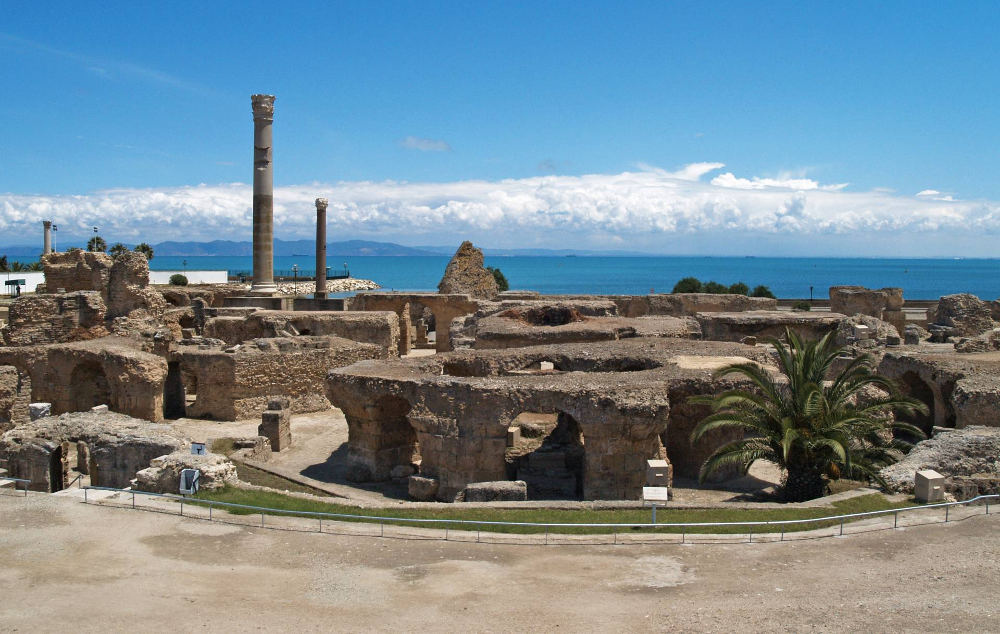

- Kartagina – taip pat šalia Tuniso. Išlikę III-IV a. šventyklų, romėniškų būstų griuvėsiai. Verta pažymėti, kad šiame mieste gimė garsusis karys Hanibalas. 46-aisiais mūsų eros metais Julijus Cezaris Kartaginoje buvo įkūręs savo karinę bazę – tai buvo didžiausia bazė šiame regione. 
- Sidi Bou Saidas – tai puikus mėlynos ir baltos spalvos kaimas, ryškiai išsidėstęs ant uolos su vaizdu į Tuniso įlanką, tai ko gero, labiausiai branginama vieta Tunise. Legenda pasakoja, jog Saint-Louis atvyko į karą ir jis įsimylėjo Berberų princesę. Pakeitus jo vardą jis tapo šio kaimo globėju, kur gyveno džiaugsmingą ir taikų gyvenimą. Apsilankius Sidi Bou Said ir pamačius šio miestelio žavesį ši istorija, pasakojama legendoje, gali pasirodyti labai logiška ir įtikinama.
- El Džemas - miestas Tunise, žymus savo puikiai išlikusiais senovės Romos amfiteatro liekanomis.